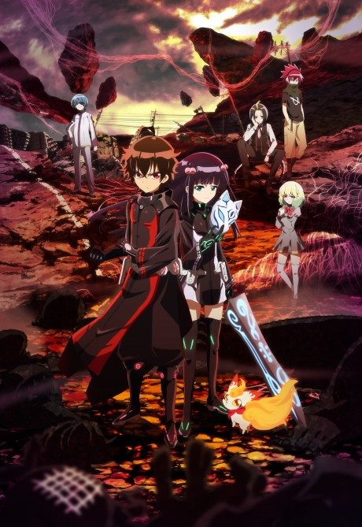

Dragon Quest: The Adventure of Dai
ドラゴンクエスト ダイの大冒険
Dai, a boy raised by monsters on an island, dreams of being a hero. When an old demon lord returns, he gets his chance.
The anime covers the whole manga.
7.3AniList score
—Animeter, no votes yet
100episodes
Rate it or report where you stopped
Anime finished. Where does the manga pick up?
StatusFully adapted
The 100-episode 2020 series adapts the entire manga through the final battle with Vearn.
More like Dragon Quest: The Adventure of Dai
 Manga Ch. 577.4
Manga Ch. 577.4
 VN6.9
VN6.9
 Manga Ch. 1118.0
Manga Ch. 1118.0
 Manga Ch. 1997.8
Manga Ch. 1997.8
 Manga Ch. 1588.2
Manga Ch. 1588.2

Manga Ch. 166.9 Manga Vol. 47.4
Manga Vol. 47.4
 Own end8.1
Own end8.1
 Unclear6.7
Unclear6.7
 Done7.3
Done7.3
 Manga Ch. 819.1
Manga Ch. 819.1
 Manga Vol. 77.2
Manga Vol. 77.2